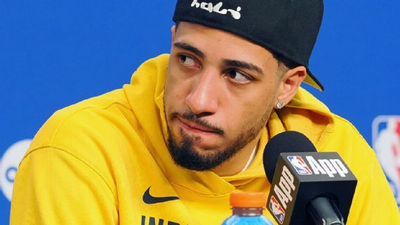

Haliburton minimiza lesão: 'São as Finais da NBA; se eu puder andar, vou
jogar'

Principal estrela do Indiana Pacers, Tyrese Haliburton teve uma noite para se esquecer no Jogo 5 das
Finais da NBA, em que a equipe foi derrotada pelo Oklahoma City Thunder por 120 a 109.
Sem converter nenhum arremesso de quadra, o armador terminou com apenas quatro pontos. Limitado por uma
lesão na panturrilha, que o fez deixar a partida e ir aos vestiários no início do segundo quarto,
Haliburton não usou as dores como desculpa.
"São as Finais, cara. Trabalhei a minha vida toda para estar aqui e quero estar na quadra competindo,
ajudando meus companheiros de qualquer maneira. Não fui ótimo hoje, de jeito nenhum, mas não passa pela
minha cabeça não jogar aqui. Se eu conseguir andar, vou jogar", disse o camisa 0 em entrevista coletiva
no Paycom Center.
Com a derrota desta segunda-feira (16), os Pacers agora estão atrás em uma série pela primeira vez
nos playoffs de 2025 - o Thunder lidera por 3 a 2. Na próxima quinta-feira (19), Indiana recebe o
Jogo 6, às 21h30 (de Brasília), com transmissão do Disney+, e que pode ser o match point do Thunder.
Rick Carlisle, técnico dos Pacers, disse que a equipe "vai avaliar a situação do armador" para o jogo
decisivo.
"É uma oportunidade única na vida. Não são muitos caras que vão ficar de fora, mesmo se estiverem um
pouco destruídos. Se você está machucado, é uma história diferente. Mas vamos avaliar tudo com Tyrese,
ver como ele acorda e tomar nossa decisão", comentou Carlisle.
Nesta pós-temporada, os Pacers têm seis vitórias e sete derrotas quando Haliburton anota 20 ou menos
pontos e oito vitórias e nenhuma derrota quando o armador ultrapassa essa marca.